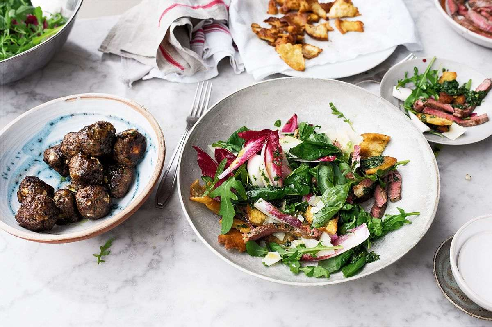

Beef sirloin and basil salad

This works either as an impressive starter or as a lunch or light supper. All the elements can be prepared a day in advance and kept in the fridge, just don’t put the dish together until you’re just about to serve: the leaves will wilt and the croutons don’t like to sit around and mingle for too long.
Preheat the oven to 200°C fan.
Place half the basil in the small bowl of a food processor with the garlic, 75ml of oil and ⅓ teaspoon of salt. Blitz to form a thick dressing and set aside.
Season the beef well with ¼ teaspoon of salt and a generous grind of black pepper. Pour 1 tablespoon of oil into a medium frying pan and place on a high heat. When the pan is very hot, add the beef and sear for 3–4 minutes (for medium-rare), turning halfway through. Remove from the pan and set aside to rest for 10 minutes.
Add the remaining 3 tablespoons of oil to the same pan and place on a high heat. When hot, add the pitta bread and fry for 2–3 minutes, shaking the pan from time to time, until golden and crisp all over. Transfer to a paper-lined plate, sprinkle with a pinch of salt and set aside.
Place the chicory, rocket, lemon juice, Parmesan, basil oil and remaining basil leaves in a large serving bowl and set aside.
When ready to serve, slice the beef against the grain into 1½cm thick slices. Sprinkle with a pinch of salt and add to the salad bowl. Add the pitta pieces, toss gently and serve at once.